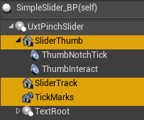
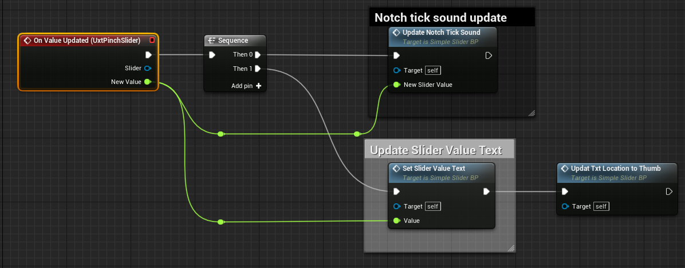

Pinch slider
A pinch slider component allows the user to continuously change a value by moving the slider thumb along the track.

Creating a pinch slider from scratch
The first step of creating a slider from scratch is adding the UxtPinchSliderComponent to an actor blueprint. This is a low level component that drives slider logic. The pinch slider visuals are made of three primary components.
- Slider thumb: This component is required. It's the static mesh that the user interacts with
- Slider track: This component is optional. It's the static mesh is scaled to match the range of the slider travel
- Tick marks: This component is optional. It's an instanced static mesh that is used to represent ticks along the track of the slider

Add a StaticMeshComponent to the actor and name it "SliderThumb" (alternatively, name it something else and and set the ThumbVisuals property of the UxtPinchSliderComponent to reference this new mesh). If you want to add a track to the slider, add a StaticMeshComponent to the actor and name it "SliderTrack" (alternatively, name it something else and and set the TrackVisuals property of the UxtPinchSliderComponent to reference this new mesh). If you want to add tick marks to the slider, add an InstancedStaticMesh to the actor, set a mesh for instancing, and name it "TickMarks" (alternatively, name it something else and and set the TickMarkVisuals property of the UxtPinchSliderComponent to reference this new instanced mesh).
It is important to note that the UxtPinchSliderComponent uses the mesh assigned to the ThumbVisuals property to construct a BoxComponent that is used for grab and far interactions. The UxtPinchSliderComponent uses the mesh extents to create this box collider.
If the slider is configured correctly, the slider should now be grabbable via near and far interaction and update its position and value based on user input.
Here are the events that you can use to hook the slider value up to you application logic:
- OnValueUpdated: This event is called whenever user interaction causes the value of the slider to change (i.e. it is moved)
- OnInteractionStarted: This event is called when a user starts grabbing the slider thumb (either near or far interaction)
- OnInteractionEnded: This event is called when a user stops grabbing the slider thumb (either near or far interaction)
- OnFocusEnter: This event is called when a pointer starts giving focus to the slider (either near or far interaction)
- OnFocusExit: This event is called when a pointer starts giving focus to the slider (either near or far interaction)
- OnStateUpdated: This event will be called whenever the slider changes its internal state. It supplies a EUxtSliderState value that represents the new state (Default, Focus, Grab).
Here is an example of the OnValueUpdated event being used:

Instance Editable Properties
SliderValue
The current value of the slider in 0-1 range
SliderStartDistance
Where the slider track starts, as distance from center along slider axis, in local space units
SliderEndDistance
Where the slider track ends, as distance from center along slider axis, in local space units.
NumTickMarks
Number of tick marks to add to the slider
TickMarkScale
Scale of the tick marks on the slider
ThumbVisuals
Visual representation of the slider thumb
TrackVisuals
Visual representation of the track
TickMarkVisuals
Visual representation of the tick marks
CollisionProfile
Collision profile used by the slider thumb